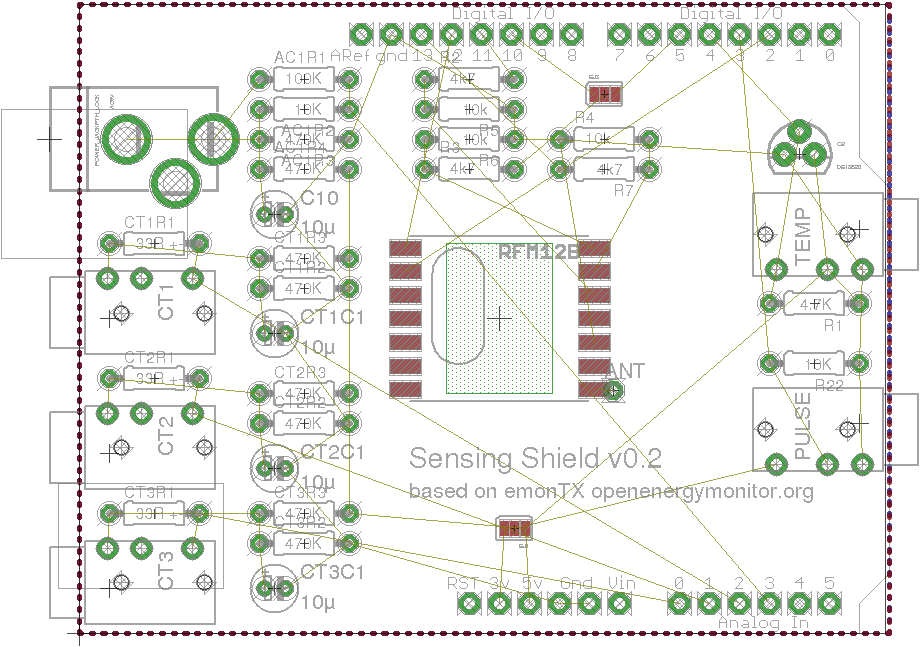
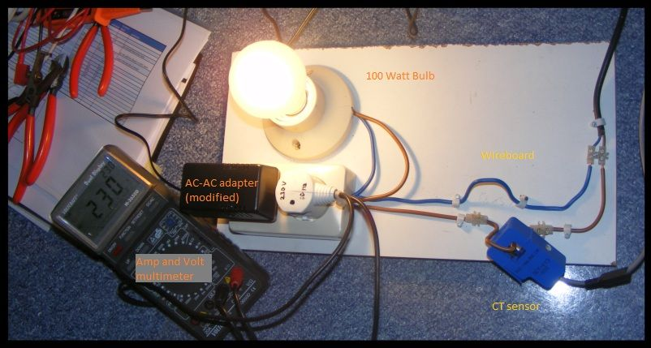

I have been playing with Eagle last couple days and managed to produce an Arduino Shield as EmonTx. The reason for me doing it is because I have two Arduinos + a Nanode v5 hanging around and would like to get some return of investment :)
It is basically a copy/paste from EmonTX and I give all the Credit to Glyn and Trystan. I only need 1 CT, so left the others out for simplicity. The RFM12B select pin can be either Digital 10 or Digital 5 so that the shield can be used either on Arduino with ethernet shield or Nanode v5.
Here is how it looks, I ordered one PCB and it will be ready the next couple days. I will make a picture and let you know how it works.
This is my first PCB ever, so I hope it works..
Re: EmonTX as an Arduino Shield
Nice, could you post up the Eagle files so I can have a closer look.
Cheers,
Re: EmonTX as an Arduino Shield
Here they are
http://dl.dropbox.com/u/18771283/my%20shield.zip
I am now concerned about the CT resistor values, because I powered the plug from 5V and not 3.3V as the EmonTX. Would you advice what the correct values should be for 5V system?
Re: EmonTX as an Arduino Shield
Where do you get your PCB made up ?
Re: EmonTX as an Arduino Shield
local PCB shop, they can make one piece of PCB like that for 5 euro
Re: EmonTX as an Arduino Shield
It will work with those values but it would be highly desirable to use a different value resistor for the burden resistor (currently 18 ohms) since the Arduino ADC will be 0-5V not 0-3.3V. A 33 ohm resistor should do the trick if using the same CT (YHDC SCT-013-000) 100A max), See here for calculations: http://openenergymonitor.org/emon/buildingblocks/ct-sensors-interface.
Couple of things I noticed on your design:
Please let us know how it goes, I know there are other people on the forum working on similar designs. There could be scope for collaboration and pooling for PCB orders. What fab house are you using?
Re: EmonTX as an Arduino Shield
just a noe: the Eagle files are produced with Eagle 6.1 and are not compatible with older version. It is free for PCBs up to 10x8 cm
Re: EmonTX as an Arduino Shield
Glyn, I will revise the board as per your comments and post new design files; It will probably take few days though as I am busy at work too.
There is a local fab-house that is really cheap and makes single copies, not sure it will work for you though. electron-pcb.com
Re: EmonTX as an Arduino Shield
ok, I made the changes, it was quite easy aftr all :) getting better at Eagle.
here is the result
and the adjusted Eagle files here
Re: EmonTX as an Arduino Shield
Great, good work fitting the extra CT's on.
What I meant with the RF was to try and get the Ant as far away from other components as possible while at the same time keeping the Ant connection close to the pad on the RFM12B. Having the RF trace cross the board would cause reductions in RF performance. I've made the change I had in mind. See attached:

Re: EmonTX as an Arduino Shield
Also could do with some silkscreen info as to what the solder jumpers do.
The silkcreen labels for the CT, temp and pulse jacks should be outside the 3.5mm socket profile, otherwise when the socket is soldered in you won't be able to see them!
Re: EmonTX as an Arduino Shield
The attached file contains my original designs?
Re: EmonTX as an Arduino Shield
Ah sorry, I attached the wrong zip! Fixed now, and I've added a photo.
Re: EmonTX as an Arduino Shield
Here is a shot of the first design I posted as PCB. I had the order already in place before I posted my message here. All the comments Glyn made bout track thickness are valid obviously :)
I am not going to solder any components on the PCB, it was just a proof of concept. I will order the newer version when I make some small modifications I have in mind.
One of the issues I noticed is that the audio jack connector (1501_03) footprint didn't match. I have this one, obviously it is the wrong one: http://bg.farnell.com/lumberg/1501-03/socket-2-5mm-jack-pcb/dp/1200127 ; Glyn Can you please poit out the correct jack to use with EmonTX and where can I buy several of them.
Other than that, the PCB is medium quality, no silkscreen on this alpha version to cut cost.
I talked to the guy and he can take international orders, though the shipping cost may offset any benefit.
Re: EmonTX as an Arduino Shield
Nice, the emonTx uses these: http://www.rapidonline.com/Cables-Connectors/3-5mm-Compact-Stereo-PCB-Socket-20-0144/?sid=f851c655-81e4-4d10-858a-73e5c9be3a69. Feel free to change it if you want.
This jacks seems to be cheaper an maybe more commonly available: http://www.rapidonline.com/Cables-Connectors/3-5mm-PCB-jack-sockets-with-chrome-plated-trim-63492
Re: EmonTX as an Arduino Shield
Here are my latest designs, I am ordering 10pcs on Monday;
Re: EmonTX as an Arduino Shield
Great, it's fantastic to see it coming along nicely. The only thing I can notice is the RFM12B ant, the trace from the antenna hole to the pad is quite small. I did the same on an early version of the emonTx and it resulted in reduced range. This can easily be fixed when you solder the antenna in place to make sure you blob solder across the gap. On later versions of the emonTx I moved the ant hole a bit closer in so they overlap.
Which 3.5mm jack socket did you go for in the end?
Re: EmonTX as an Arduino Shield
thanks, I am sticking to the 2.5 jacks you used in earlier EmonTXs-es for now because I already have a number of them. The supplier you pointed out has high shipping cost to my place, while farnell is quite reasonable (thru a local dealer). I am also not experienced in customizing footprints, so I chose the already available one.
Regarding the antenna, you are right; will revise in newer versions.
Re: EmonTX as an Arduino Shield
here is the new version :)
Re: EmonTX as an Arduino Shield
Looks nice! Does it work?
What CT's do you intend to use with 2.5mm jacks? The burden resistor will probable need to be a different value if the CT you use had a different number of turns. Calibration will also be different. See the building blocks section for info on this.
Re: EmonTX as an Arduino Shield
I still use the SCT013-000, just change the 3.5mm jack to 2.5mm. The burden in place is 33Ohm one. I tested the CT and it reads ~4000W on an appliance with 1500W so definitely I need to do calibration. I don't have the 9V AC/AC transformer yet so I am unable to test the voltage sensing. The RFM12B works just fine, I modified the RFM12B library so it works on pin 5 as chip select because I am testing it on Arduino Ethernet where pin 10 is taken by the Ethernet.
Next tests will be to try to make it work with the Ethernet at the same time, I read the interrupts that the RFM kicks in corrupt Ethernet data. JCW suggests doing a cli() before calling Ethernet code.
I will report how it goes along.
Re: EmonTX as an Arduino Shield
Wow, I am quite happy with the results. I have the shield working on a http://arduino.cc/en/Main/ArduinoBoardEthernet Arduino Ethernet board, so it is quite solid alternative for NanodeRF as a emon Base. The big plus is the Wiznet5100 chip and the in-built uSD card.
To change the RFM12b pin from 10 (default, but conflicting with Arduino Ethernet) to digital 5, I made the following adjustment to RF12.cpp file in the JeeLib library:
[code]
// ATmega168, ATmega328, etc.
Re: EmonTX as an Arduino Shield
Just one more comment, the Arduino Ethernet (the one that has the ethernet on the board, not as a shield) has a bugfix in place that allows all this to be possible without hardware modifications. In order for this to work on a regular arduino with older Ethernet shields, some re-wiring has to be done that makes it harder for the wider public to accomodate. For the reference, here is a link to illustrate the isse:
http://john.crouchley.com/blog/archives/662
Re: EmonTX as an Arduino Shield
Fantastic! Good work getting the RFM12B to work. I tried a while back using an older DS robotics Wiznet Ethernet shield but failed since this shield like the older Arduino Ethernet Shields does not use an inverter logic gate to control SEN with respect to /SCS as recommended on the wiznet blog: http://wiznethk.
Why have you changed
Re: EmonTX as an Arduino Shield
The Arduino Ethernet has a 74LVC1G14DBV SINGLE SCHMITT-TRIGGER INVERTER to do the job, specs here http://www.datasheetcatalog.org/datasheet2/9/0opee59d2pr98c65t09o1g2poypy.pdf
Check the Arduino Ethernet schematic here (note the 74LVC1G14DBV on SEN) http://arduino.cc/en/uploads/Main/arduino-ethernet-schematic.pdf
So, overall it is a perfect candidate for EmonBase replacement in my home projects. The tests are now 5 hours in progress and all OK.
Regarding the pins, you are most probably looking at the wrong place; the pins you outlined are for AtTiny84; for AtMega I have the correct ones (didn't change that part at all);
Check ot from line 72 onward: https://github.com/jcw/jeelib/blob/master/RF12.cpp
Re: EmonTX as an Arduino Shield
Oh yeah, your right I was looking at AtMega. I see SPI pins are the same for Atmega. That makes sense.
Re: EmonTX as an Arduino Shield
Did you get an beter calibration with this burden resistor? Did you modify the emonlib.cpp calibration current?
default it's : current constant = (100A / 0.050A) / 18ohm = 111.11
but with an 33ohm resistor it should be:
current constant = (100A / 0.050A) / 33 ohm = 60.606
Re: EmonTX as an Arduino Shield
No, I didn't modify the library, rather I used this approach as a basis:
https://github.com/openenergymonitor/EmonLib/blob/master/examples/voltage_and_current/voltage_and_current.ino
It allows you to select the pin and calibration. I seem to have lost my sketch code after some troubles with Google Drive failing to sync some files, I will have to check old backups to see the exact values I used.
Re: EmonTX as an Arduino Shield
Thats more handy than alter the hardcoded lines at the emonlib.
But I discovered that an NanodeRF (where I will put your shield on) is running at 3.3V and not like your arduino ethernet that has an 5Volt line. So I'm lucky that I ordered some spare resistors (18,27 and 33 Ohm) today at my localwebshop (conrad.nl). And I will report my tests to this topic when I received and build my nanodeRF and sensingshield!
Re: EmonTX as an Arduino Shield
I got my sensingshield running now! connected to the nanodeRF and I setup an testboard for calibrating the CT-sensor.

It's an 100W bulb lamp with the AC-AC adapter and multimeter parralel connected to it.
I also made an on/off switch (outside the photo) and some wirebridges for the CT-sensor clamp. I also did 2 small modifcations. 1) I connected an 2.5 female jackplug to the CT-sensor because Martin delivers the 2.5 male printboard headers. and 2) I cut the housing of a mascot 9550 AC-AC adapter because it's an UK switch-plug and I need an EU plug at my home (the netherlands).
Anyway, I can confirm that a 33 ohm resistor is the right one to use if you have an sensingshield on top of an Arduino UNO or a NanodeRF like me. This because the 0-5 Volt regulation of the analoge ports. (and not the 3.3volts like the emonTX).
Re: EmonTX as an Arduino Shield
Thanks Alco,
[edit: I see oyu only changed the plug, I thought you did other changes]
can you also describe what modifications to the AC/AC adapter you made?Also when you test, I suggest to have an inductive load also (a fan for example) to see how the power factor varies. I have interesting results in my house, depending what appliances are turned on or off.
I recovered my sketch that captures voltage and current and now have it on GitHub, here is a link
https://github.com/mharizanov/SensingShield/tree/master/voltage_and_current
Re: EmonTX as an Arduino Shield
By the way, these enclosed AC/AC transformers are unreasonably expensive, I find it uneasy to pay 15 Euro for them..
I got myself this one